Hjem
Seneste aktiviteter
Forskning
Formidling
Undervisning/vejledning
CV
Kontakt mig
Personligt
Nyheder og seneste aktiviteter
Nyheder
Skriv mig op for lejlighedsvise nyheder
Juli 2020
1–2 Jul 2020
Juni 2020
22 Jun 2020
15 Jun 2020
Maj 2020
25 Maj 2020
April 2020
24 apr 2020
3 apr 2020
Marts 2020
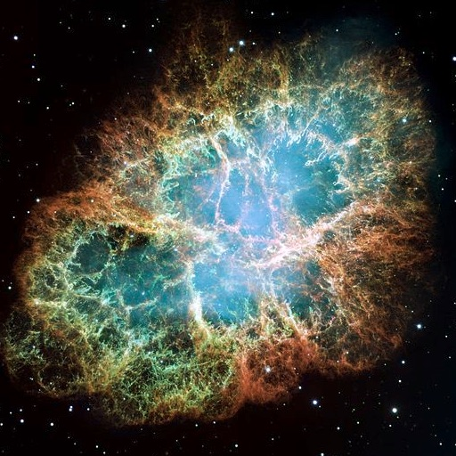
23 Mar 2020
12 Mar 2020
2–6 Mar 2020
Februar 2020
13-16 Feb 2020
Januar 2020
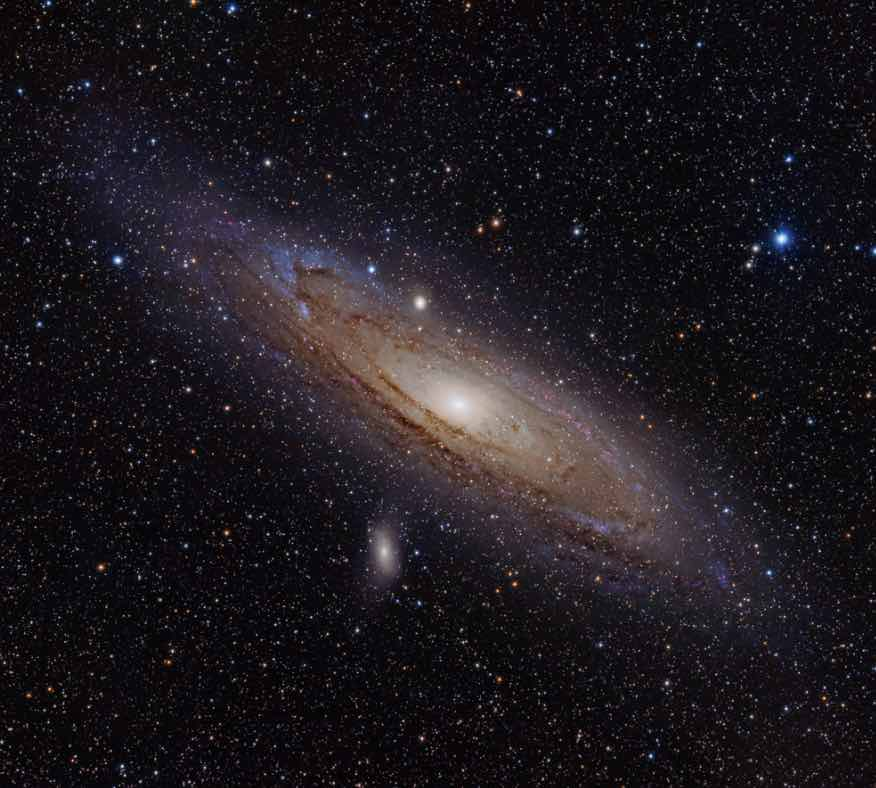
22 Jan 2020
December 2019
28 Dec 2019
5 Dec 2019
November 2019
12 Nov 2019
1 Nov 2019
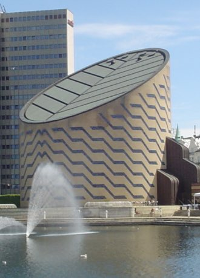
1 Nov 2019
Oktober 2019
25 okt 2019
21 okt 2019
11 Okt 2019
5 Okt 2019
4 Okt 2019
September 2019
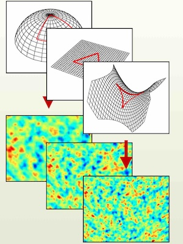
23-24 sep 2019
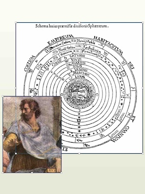
12 Sep 2019
August 2019
29 aug 2019
20 aug 2019
14 aug 2019
12 aug 2019
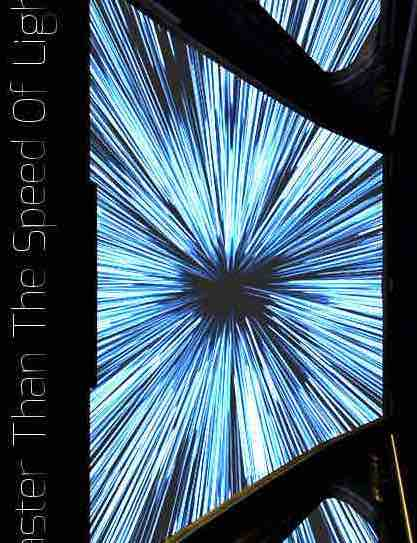
8 aug 2019
Juli 2019
26 jul 2019
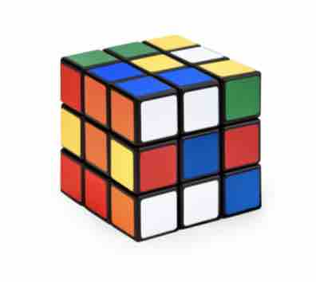
28 jul 2019
23 jul 2019
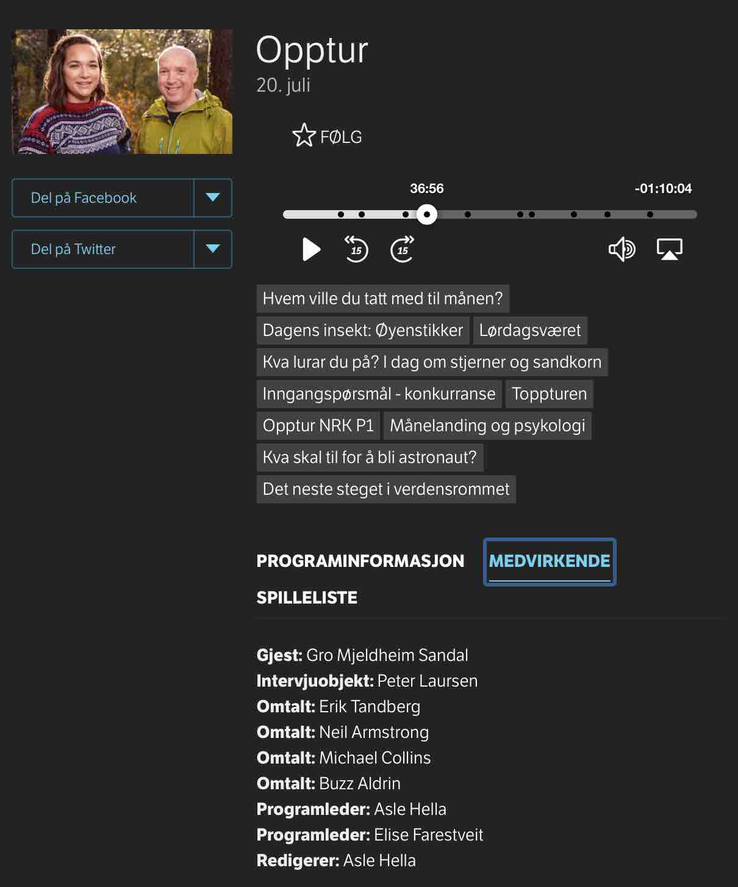
20 jul 2019
17 jul 2019
17 jul 2019
12 jul 2019
11 jul 2019
9 jul 2019
Juni 2019
29 jun 2019
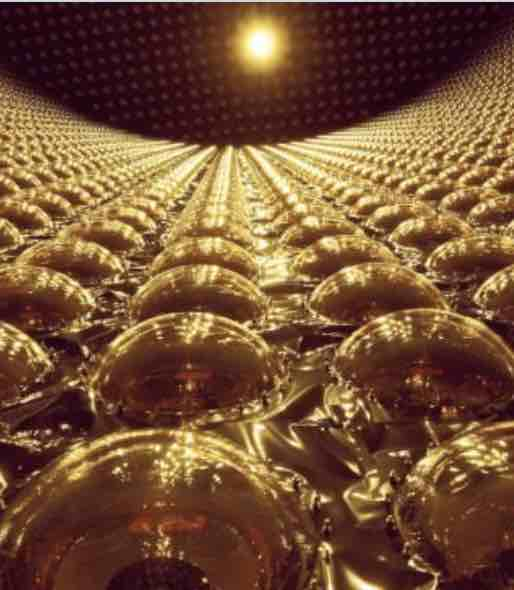
28 jun 2019
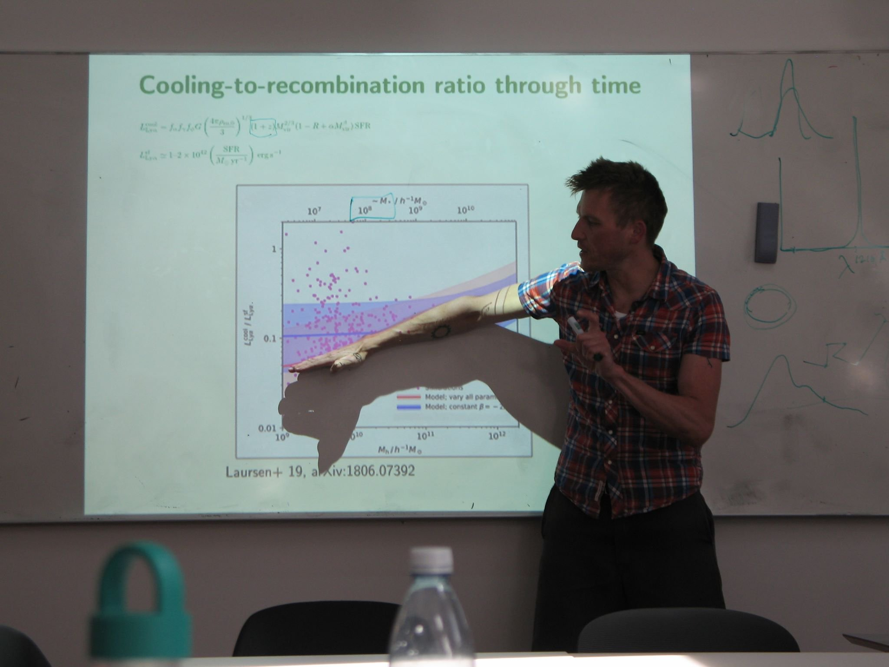
24 jun 2019
13 jun 2019
5 jun 2019
2 jun 2019
Maj 2019
29 maj 2019
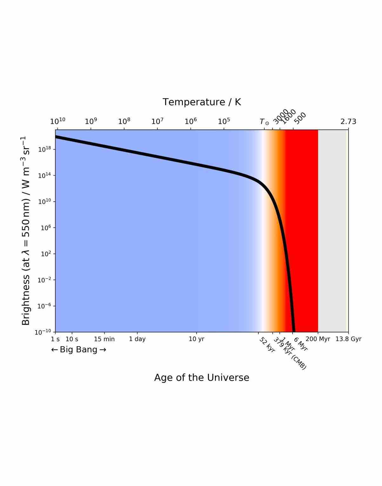
16 maj 2019
April 2019
17 apr 2019
14 apr 2019
11 apr 2019
10 apr 2019
9 apr 2019
4 apr 2019
Marts 2019
29 mar 2019
21 mar 2019
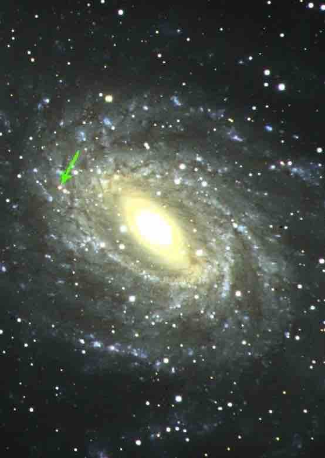
14 mar 2019
Februar 2019
17 feb 2019
1 feb 2019
Januar 2019
9 jan 2019
9 jan 2019
9 jan 2019


{kind=link}